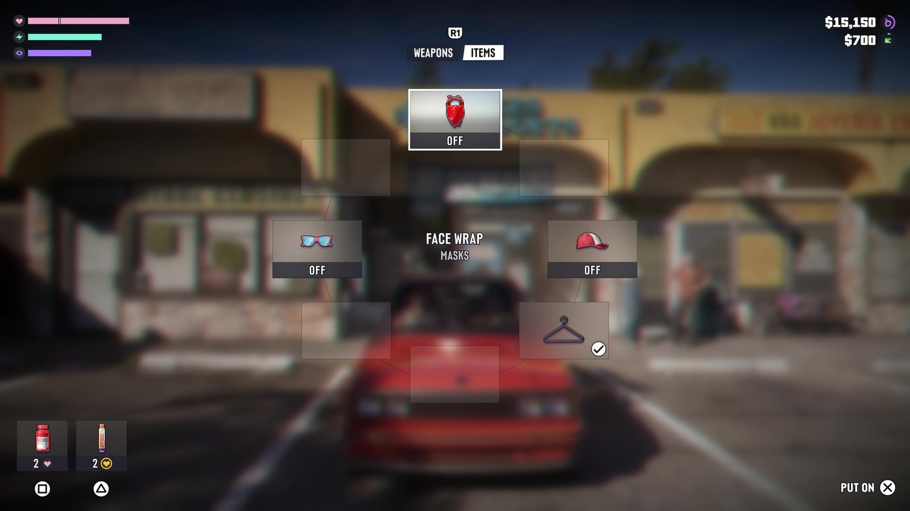
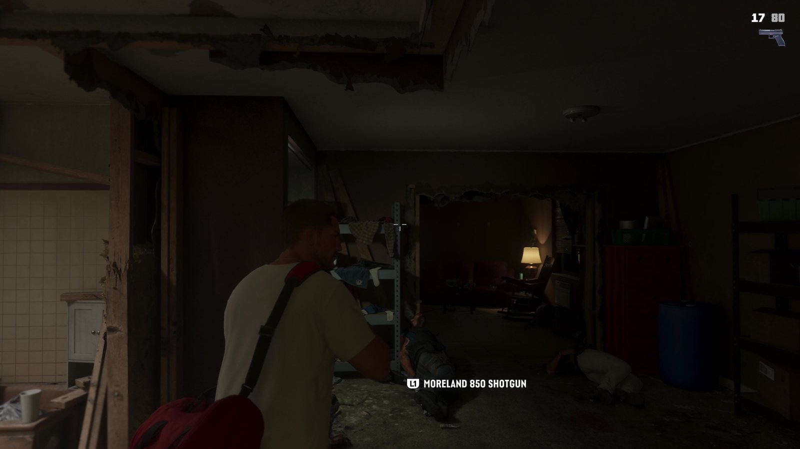

Оружие и снаряжение в GTA 5 и GTA 6: карманы без дна закончились
Обновлено:

- В GTA 5 колесо оружия вмещало весь арсенал сразу. В GTA 6 носить можно ограниченный набор.
- Лишнее оружие хранится в багажнике машины или в убежище.
- Маски, очки и кепки выбираются в отдельном колесе предметов.
- У оружия есть названия моделей, например Moreland 850 Shotgun.
Где ты это всё носил?
Главная шутка про GTA 5: Тревор в майке достаёт из ниоткуда ракетницу, миниган, снайперскую винтовку и канистру бензина. Колесо оружия было бездонным — в GTA Online можно было таскать больше полусотни стволов. GTA 6 эту шутку закрывает.
Было — стало
| GTA 5 | GTA 6 | |
|---|---|---|
| Сколько оружия с собой | Весь арсенал | Ограниченный набор: основное, дополнительное, метательное, бинокль |
| Где лишнее | Нигде — всё в «карманах» | В багажнике машины или в убежище |
| Маски и аксессуары | Через меню гардероба и магазины | Отдельное колесо предметов, надеть на ходу |
| Названия оружия | Общие («Карабин», «Дробовик») | Модели, например Moreland 850 Shotgun |
| Лечение | Автовосстановление и еда | Предметы в быстром доступе (в кадре — таблетки ×2) |
Багажник вместо карманов
По разбору «Расширенного показа» на Sole Retriever, носить можно основное оружие, дополнительное, метательное и бинокль — плюс, возможно, ещё один-два слота. Остальное лежит в багажнике машины или в убежище. На 17:50 это видно прямо в кадре: герой стоит у открытого багажника красной машины, и на экране появляется меню с вкладками Weapons и Items.
В правом верхнем углу — сразу две суммы денег: $15 150 и $700, у каждой свой значок. Что это за два счёта, Rockstar не объясняла. Самая простая версия — отдельные деньги Джейсона и Лусии, но это только наша догадка.
Это решение Rockstar уже проверяла. В Red Dead Redemption 2 Артур носил с собой только пару пистолетов и два длинных ствола, а остальное оставалось в седле лошади. Игроки сначала ворчали, потом привыкли: выбор оружия перед делом стал частью подготовки. В GTA 6 роль лошади, судя по всему, играет багажник.
Колесо предметов
В GTA 5 маску нужно было купить и надеть через меню. В GTA 6, по данным Engadget (отметка 17:10), лицо закрывается через колесо предметов — как банданой в RDR2. В меню на кадре видны бандана («Face Wrap — Masks»), солнцезащитные очки, кепка и вешалка — быстрая смена одежды.
Это напрямую связано с новым розыском: полиция запоминает лицо и одежду. Бандана на время дела и переодевание после — уже не косметика, а тактика. Как работает розыск — Полиция в GTA 5 и GTA 6: как изменился розыск.

Что изменилось в стрельбе
По подсчётам Engadget, которые совпадают с тем, что видно в кадрах:
- 18:31 — быстрое переключение между двумя стволами без колеса оружия.
- 21:47 — оружие подбирается с пола быстрее и плавнее, прямо в бою.
- 09:21 — Лусия стреляет из дробовика одной рукой, второй держа добычу.
- 17:37 — новая анимация: герой прячет пистолет за спину перед тем, как войти в магазин.
Отдельно игроки заметили в финале видео замедление времени при стрельбе — очень похожее на способность Майкла из GTA 5. Rockstar официально не называла это спецспособностью Джейсона, поэтому пока считаем это наблюдением, а не фактом. Раньше мы писали, что спецспособности не объявлены (Герои GTA 5 и GTA 6: трое против двоих) — это по-прежнему так.
Что это меняет
- Подготовка к делу становится частью игры: что взять из багажника, какую маску надеть.
- Машина — не только транспорт, но и склад. Потерял машину — потерял арсенал (наша догадка).
- Меньше абсурда, больше RDR2-реализма — но в темпе GTA.
Что известно об оружии в целом — Оружие в GTA 6: что известно. Все сцены видео — «Расширенный показ» GTA 6: что показали за 26 минут — с таймкодами.
Источники: Rockstar Games — «Grand Theft Auto VI: An Extended Look» (04:26, 17:50); Engadget; Sole Retriever (лимит оружия); Red Dead Redemption 2 (Rockstar, 2018).